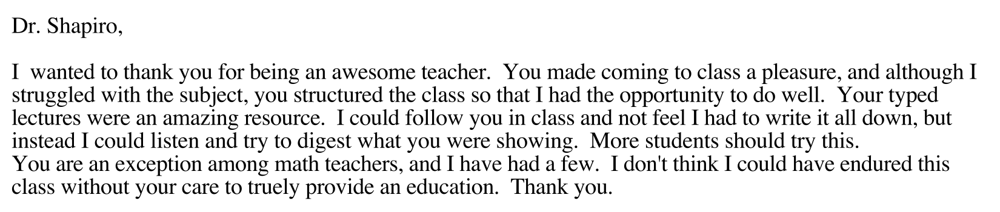
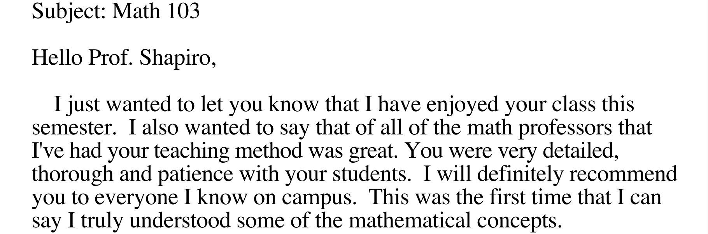
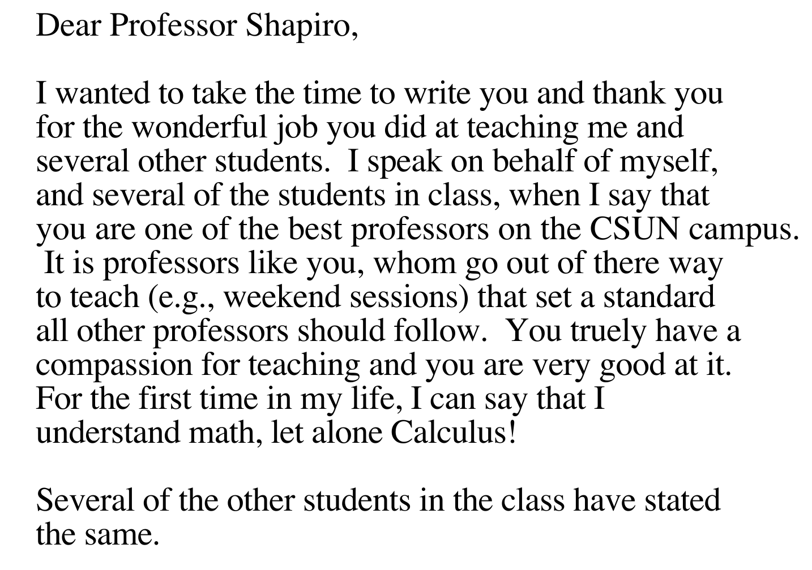
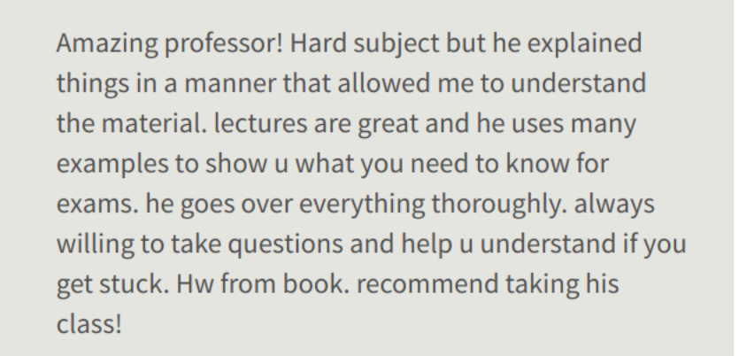

|
This is a summary of the courses that I taught at CSUN - I can probably help you with these subjects:
I can probably also help with similar or related subjects like trig or pre-calc. I might be able to help with more advanced topics including machine learning and biocomputation, or with basic computer questions. (I cannot debug Mac or Windows installations or issues, though.) This is one-on-one, live, in person tutoring only. There will be no online or video meetings. I will not teach you to use AI's (like chatgpt) to help you learn math, nor will I use them during tutoring. I will not suggest online videos for you to watch. If this style interests you and and you are interested in tutoring I suggest we meet at a local coffee house, such as Tatiana's on Main, for a half-hour consultation, to see if we are mathematically compatible. Please bring your current mathematics textbook, paper, and pencil (or pen). If there is a computer programming aspect to your class, or online access is required for your textbook or homework, please bring a laptop or tablet. There is no charge for this first consultation. Answers to Frequently Asked Questions:
Here are few image captures of letters and online evaluations previous students have written (names/classes hidden for privacy):     Background pictures: The coffee cup features an attractively served cappucino from El Mirador de Only You in Valencia, Spain, May, 2025. The fractal results from fixed point interation on the quadratic zn+1=zn2+.2323-.5345i. Python code available to generate the picture available here. |